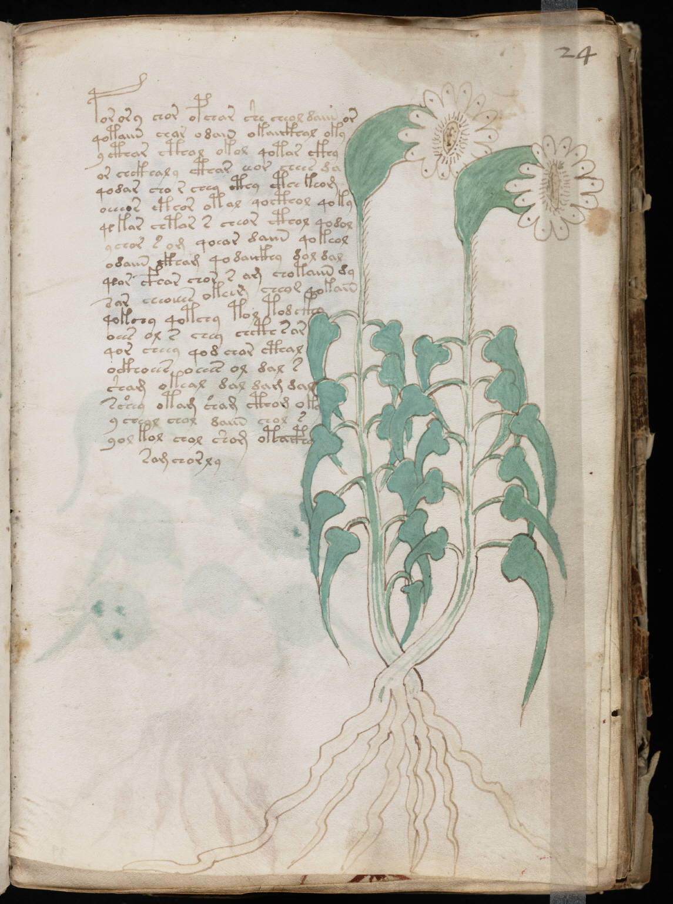

f24r
1porory chor opchar she cheol daiin or2qotaiin char odain okaiikhal oky3y cthar cthal okol qotar ckhy4or chckhaly cthar eeor chees da5qodar cho r chey cthy cthckeom6oeeeos eteor otal qocthol qoky7qekar chtar s cheor cthol qodol8ychor s om qoear daiin qokeol9odaiin ckham qodaiikhy dol dal10q*or cfhar chor s am chotaiin dy11sar cheoiees okeer cheor qokain12qokchy qotchy tol tod ckhy13oees ol s chey chcth sar14qor cheey qod char cthal15ockhoees oeees ol dal s16sham okeal dal dam dal17sshey otam sham cthom oky18y cheol chol daiin chol s19yol tol chol shom otaiphy20samchorly
